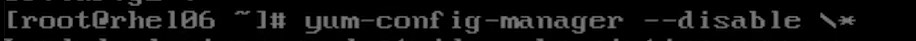
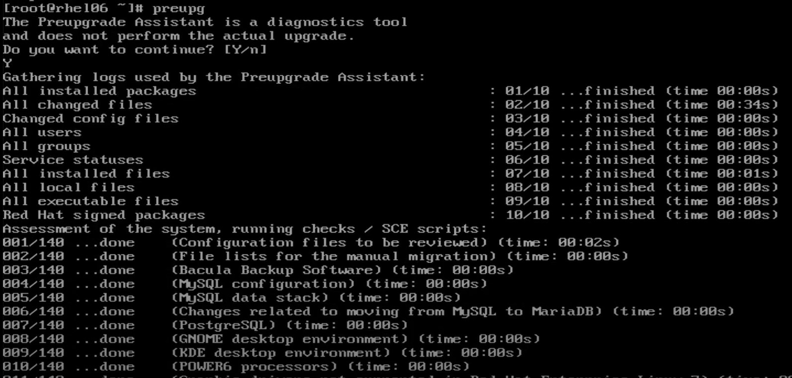
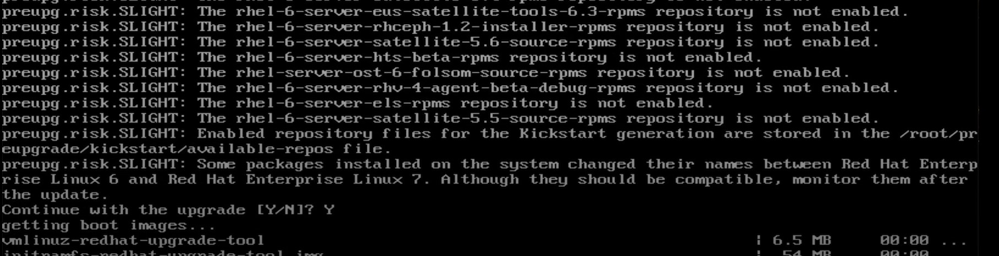
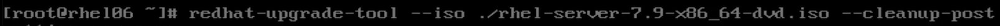
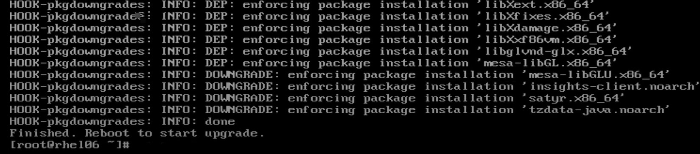
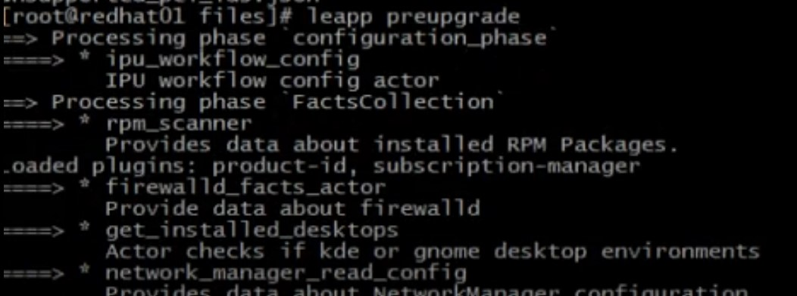
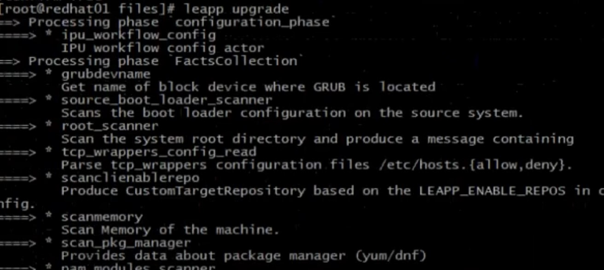

This will happen with 2 step RHEL6 to RHEL7 then RHEL 7 to RHEL 8
Note: take the snapshot before beginning
1. Update of your system to UpToDate.
First check the repo is set.
Then run update the system
yum update --- should be upgraded to rhel6.6
2. Now install the preupgarde by copying below tar file from Sharepoint to target server.
File -- rhel6torhel7.tar
1. Untar the rhel6torhel7.tar:
tar -xvf rhel6torhel7.tar
2. The install the packages on the system:
• cd <untard folder>
yum localinstall *
3. Disable all repo:
yum-config-manager --disable \*

4.run the pre-upgrade on server
preupg

Press Y for yes to upgrade.

Check for the error and inhibitor and resolve them by checking the answer file and recommendation:
5. Copy the ISO to target server
6. Run actual upgrade by running below command:
redhat-upgrade-tool --iso /<iso> --cleanup-post

7. There will be prompt for reboot teh server at the end.

Now server will boot with RHEL 7, it will take some time to boot and may reboot multiple time (twice).
Then you get the login prompt.
Note: take the snapshot before begin
1. Update of your system UpToDate
First check the repo is set.
Then run update the system
<< yum update >> should be upgraded to rhel7.9
2. Now install the preupgarde by copying below tar file from sharepoint to target server.
File -- rhel7torhel8.tar
tar -xvf rhel7torhel8.tar
The install the packages on the system:
cd untard folder
yum localinstall
3. We need to run preupgrade:
leap preuprade -target 8.8 --no-rhsm

Check for the error and inhibitor and resolve them by checking the answer file and recommendation
One of them is:
we need unload kernel driver that is not supported in the 8, by running below command :
Ismod | grep pata_acpi
modprobe -r pata_acpi
lsmod | grep pata_acpi
4. Once all the issues fixed update to RHEL 8 do a leapp upgrade by running below command:
leapp upgrade --target 8.8 --no-rhsm
once leap upgrade finish, it will ask reboot.

5. Reboot the server
5. Once booted with rhel8, set the repo and patch the server to get RHEL 8.10.